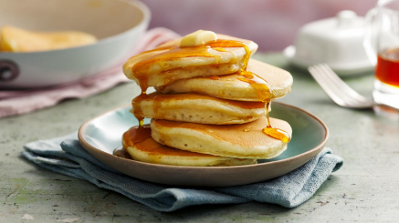

Fluffy American pancakes

Easy American pancakes make a light and fluffy weekend brunch.
Try adding a large handful of fresh blueberries to the batter before cooking.
Ingredients
- 135g/4¾oz plain flour
- 1 tsp baking powder
- ½ tsp salt/li>
- 2 tbsp caster sugar
- 130ml/4½fl oz milk
- 1 large egg, lightly beaten
- 2 tbsp melted butter (allowed to cool slightly) or olive oil, plus extra for cooking
To serve
Steps
- Sift the flour, baking powder, salt and caster sugar into a large bowl. In a separate bowl or jug, lightly whisk together the milk and egg, then whisk in the melted butter.
- Pour the milk mixture into the flour mixture and, using a fork, beat until you have a smooth batter. Any lumps will soon disappear with a little mixing. Let the batter stand for a few minutes.
- Heat a non-stick frying pan over a medium heat and add a knob of butter. When it's melted, add a ladle of batter (or two if your frying pan is big enough to cook two pancakes at the same time). It will seem very thick but this is how it should be. Wait until the top of the pancake begins to bubble, then turn it over and cook until both sides are golden brown and the pancake has risen to about 1cm/½in thick.
- Repeat until all the batter is used up. You can keep the pancakes warm in a low oven, but they taste best fresh out the pan.
- Serve with lashings of real maple syrup and extra butter, if you like.
Take Me Home